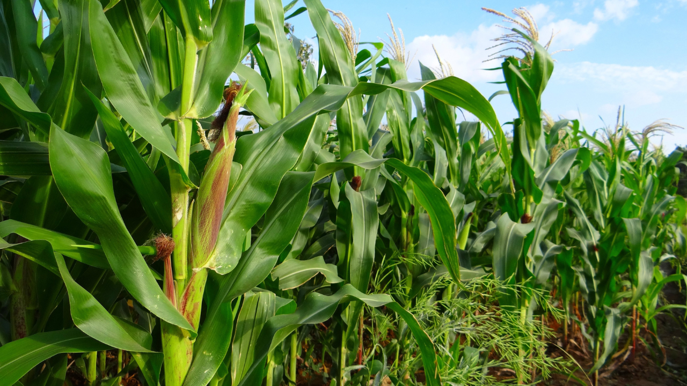
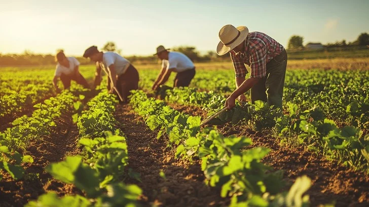

Supported Crops

Maize Tomatoes
Tomatoes
Potatoes
 Beans
Beans
Expert System for Crop Disease Diagnosis
Powered by agricultural expert knowledge and rule-based reasoning
Start Diagnosis
Mimics how agricultural experts diagnose diseases using IF-THEN rules
Guided questions to narrow down possibilities step by step
Shows which symptoms matched and which rules were triggered
Provides recommended treatments and preventive measures

Maize
Tomatoes
Beans
Choose your crop type (maize, tomato, potato or beans)
Answer guided questions about leaf color, spots, stem condition
Receive probable disease with treatment recommendations
View explanation of reasoning and triggered rules